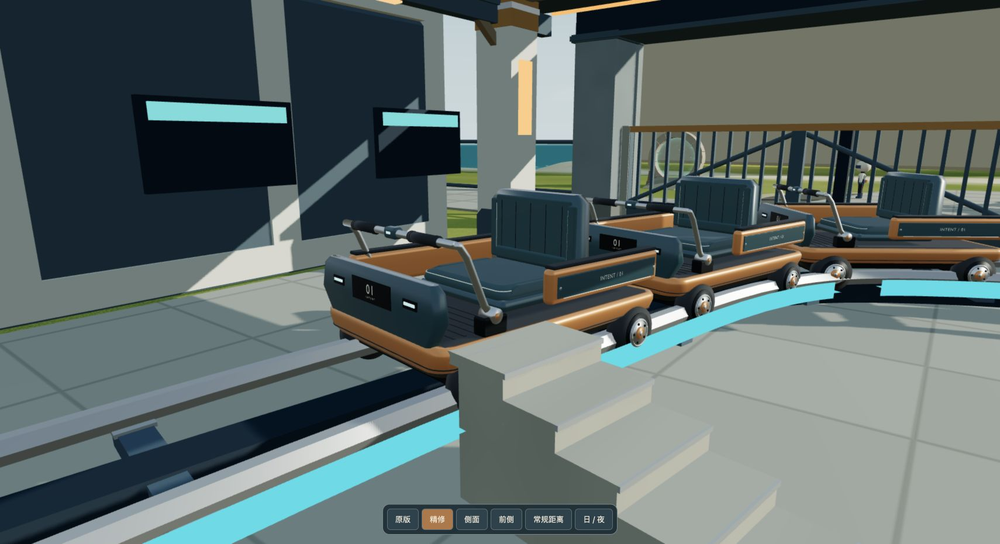
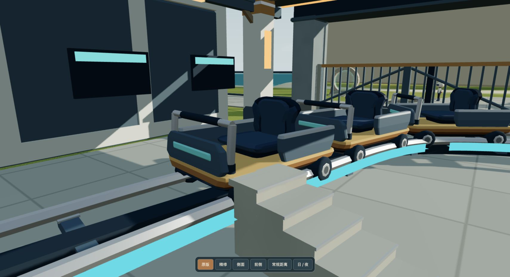

<!doctype html>
<html lang="zh-CN"><meta charset="utf-8"><meta name="viewport" content="width=device-width, initial-scale=1">
<title>列车 · 单件精修对照</title>
<style>
*{box-sizing:border-box}body{margin:0;background:#101b20;color:#f1eadb;font:15px/1.6 system-ui,-apple-system,sans-serif}main{max-width:1480px;margin:auto;padding:34px 28px}header{display:flex;align-items:end;justify-content:space-between;gap:20px;margin-bottom:22px}h1{font-size:28px;font-weight:550;letter-spacing:-.03em;margin:0 0 4px}p{color:#a9b8ba;margin:0}nav{display:flex;gap:8px;flex-wrap:wrap}button,a{font:inherit;color:inherit}button{cursor:pointer;border:1px solid #49616b;background:transparent;border-radius:8px;padding:8px 14px}button[aria-pressed=true]{background:#b57644;border-color:#b57644;color:white}.comparison{position:relative;overflow:hidden;border:1px solid #40555d;border-radius:10px;line-height:0;aspect-ratio:1710/931;background:#162831}.comparison img{position:absolute;width:100%;height:100%;object-fit:contain;inset:0}.old{clip-path:inset(0 50% 0 0)}.line{position:absolute;top:0;bottom:0;left:50%;width:2px;background:#f1eadb;pointer-events:none}.label{position:absolute;top:16px;background:#13252de8;border:1px solid #83979888;border-radius:6px;padding:9px 14px;font-size:13px;line-height:1.3}.left{left:16px}.right{right:16px}.slider{display:flex;align-items:center;gap:20px;margin:17px 0 24px}.slider input{flex:1;accent-color:#dca367;cursor:ew-resize}footer{display:flex;justify-content:space-between;gap:18px;flex-wrap:wrap;font-size:13px;color:#a9b8ba}a{text-underline-offset:4px}a:hover{color:#e8c291}@media(max-width:800px){main{padding:20px 12px}header{display:block}nav{margin-top:16px}h1{font-size:24px}.label{top:8px;padding:6px 10px}}
</style>
<main><header><div><h1>列车 · 单件精修</h1><p>同一网页场景、机位与曝光，直接对照原图。</p></div><nav aria-label="对照视角"><button data-view="front-day" aria-pressed="true">近景 · 正午</button><button data-view="ordinary-day" aria-pressed="false">常规距离</button><button data-view="front-night" aria-pressed="false">近景 · 深夜</button></nav></header>
<div class="comparison"><div class="line"></div><span class="label left">原版</span><span class="label right">精修</span></div>
<div class="slider"><span>原版</span><input aria-label="拖动对照分界线" type="range" min="0" max="100" value="50"><span>精修</span></div>
<footer><span>圆润包边、分层车壳、软垫缝线、金属扶手与轮毂。独立小样，4341 稳定页未替换。</span><a href="/world/?start=coaster&amp;quality=balanced&amp;paused=1&amp;car=optimized">打开优化版 3D 小样</a></footer><p style="margin-top:16px"><a href="/chest-review/">Sol 独立宝箱对照</a> · <a href="performance.html">查看性能验收</a></p></main>
<script>
const before=document.querySelector('#before'),after=document.querySelector('#after'),line=document.querySelector('.line'),slider=document.querySelector('input');
slider.oninput=()=>{before.style.clipPath=`inset(0 ${100-slider.value}% 0 0)`;line.style.left=slider.value+'%';};
document.querySelectorAll('[data-view]').forEach(button=>button.onclick=()=>{document.querySelectorAll('[data-view]').forEach(b=>b.setAttribute('aria-pressed',String(b===button)));before.src=`before-${button.dataset.view}.png`;after.src=`after-${button.dataset.view}.png`;});
</script></html>
